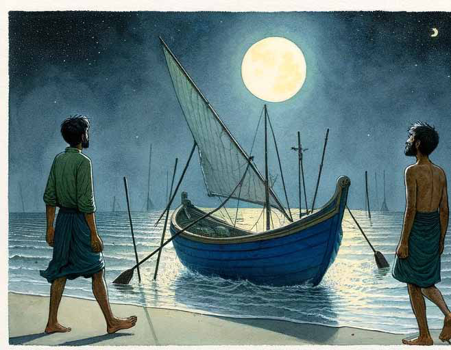
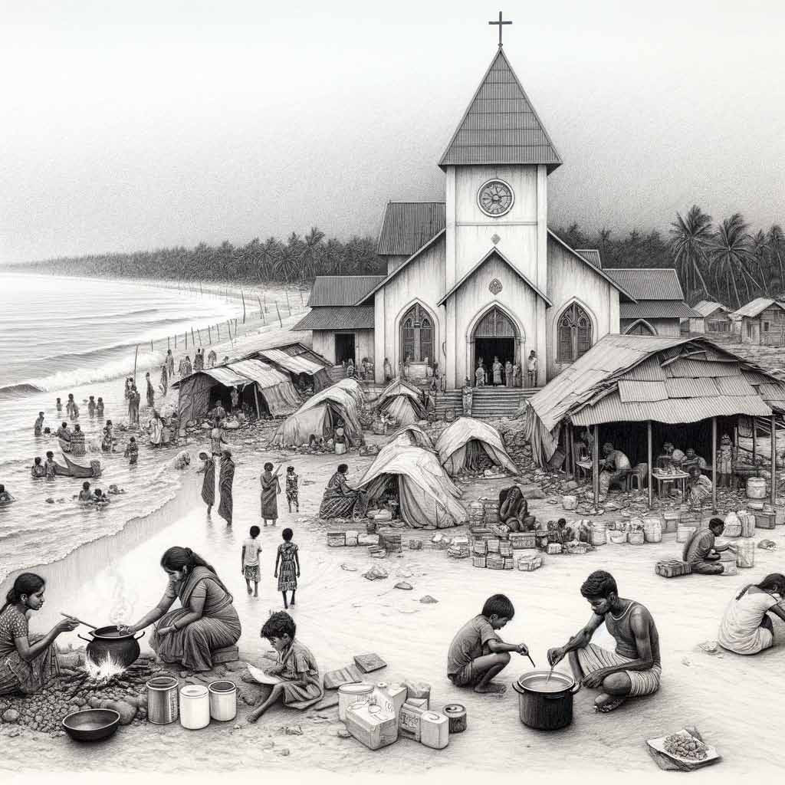

Sayanthan: Lawyer or Predator?
Sayanthan: Lawyer or Predator?
Jaffna Monitor hellojaffnamonitor@gmail.com 30 A young man previously arrested under the stringent provi- sions of the Terrorism Prevention Act was granted bail by the Chavakachcheri Magistrate's Court on December 28. His arrest on November 27 in Kodikamam during the Maaveerar Day commemo- ration occurred because he was wearing a T-shirt featuring the im- age and emblem of Velupillai Prabhakaran, the infamous leader of the LTTE. The case initially met with a stern response from the authorities but saw a shift when the Attorney General's Department consented to the youth's release on bail. Tharmakulasingam Anjanan, represent- ing him in court, successfully argued for his release. However, this legal victory was overshadowed by a controversial episode involving former Provincial Council member and Tamil National Alliance member Sayanthan. Following the arrest, the youth's parents, in a desperate bid to secure their son's release, sought assistance from Minister Douglas De- vananda. They shared a distressing account of their interactions with Sayanthan, who, despite publicly inciting support for the LTTE cause, allegedly exploited their plight by demanding a hefty fee of 20,000 rupees for his legal services. The financially struggling family had to pawn their jewelry to meet this demand. The irony of Sayanthan's actions sparked widespread outrage, mainly as the story unfolded. A video of the youth's parents discussing the incident with Minister De- vananda went viral on social media, leading to public indignation. Accusations flew thick and fast against lawyer-politicians like Say- anthan, suggesting ulterior motives in their actions. There were allegations that they were inciting innocent youths into arrestable activities as part of a profitable scheme. This incident has raised serious ethical questions about those who claim to defend a cause only to exploit those they purport to repre- sent. Sayanthan: Lawyer or Predator? Monitor Memo

Jaffna Monitor hellojaffnamonitor@gmail.com 31 Translated from the original Tamil short story kapṭaṉ (fg;ld;) by Shobasakthi. The original story is available at his website www.shobasakthi.com Translated by: eḻuttukkiṉiyavaṉ (vOj;Jf;fpdpatd;) Story In January of the year Nineteen Hundred and Ninety One, Liberation Tigers of Tamil Eelam nicknamed Manuel Poṉrāsā as ‘Captain.’ This incident unfolded thus: In June of Nineteen Ninety, Tigers had laid siege to Jaffna fort. Hundreds of government army soldiers were caught inside the fort. Tigers had cut off all supply lines to the fort. They were trying to scale the fort walls using light cranes. There was a secret passage to enter the fort from the sea. Tigers on small boats tried to breach the fort via this secret passage. Tiger artillery kept on pounding the fort walls and perforating them. It was a battle of life and death for the soldiers. They fought day and night to defend the fort. In July, two helicopters that attempted to airdrop food and medicines were shot down by two Tigers. By the middle of August, having completely depleted their ammunition and food stocks, it appeared that the army had no option other than to surrender to Tigers. The day after the Red Cross had informed the government that they would facilitate the arrangements for the surrender, rescue forces from the army landed by air and sea in Urāththuṟai, Captain PART 01

Jaffna Monitor hellojaffnamonitor@gmail.com 32 14 kilometers southwest of the fort. Those forces started slowly advancing towards the fort. Launching rockets, and dropping bombs from aircrafts, the army inched forward from Urāththuṟai. Tigers had not anticipated that the army would land in Urāththuṟai. There was no other way to move their forces from Jaffna or Vaṉṉi to Urāththuṟai than by sea. The sea was already under the control of the Sri Lankan navy. Every inch of the sea was burning. The skeletal Tiger forces that were in Urāththuṟai started falling back, advising the people along the way, “run!” Around midday that day, they entered the village of Suruvil and sped through in their vehicles telling, “the army will enter this village by tomorrow morning, run.” With the army at one end, the fort at the other, and the sea on either side, people scampered, looking for a fifth side. Two youths from Suruvil, twenty-year-old Christy and eighteen-year-old Bosco, went to their father and said, “aiyā, we are going to escape to India by boat.” Fear of life pervaded their faces. Rubbing his left cheek with his right hand, Poṉrāsā regarded his sons intently. Finally, he declared, “there is no need, you can remain here, the army will not come here.” The sons were overcome with sadness and disappointment. In their minds, it was a battle for life and death. Poṉrāsā’s nonchalant demeanor began to irritate them. The younger Bosco mustered some courage to assert, “the boys from the movement have told everyone to evacuate, the army will be here at any time.” Poṉrāsā, who was standing on the front yard of the hut, sat on his haunches in the sand, and told his sons to do the same. He smoothed the sand with his hand and hurriedly started to draw a map. His scarred index finger tore through the sand to create lines. “This is Urāththuṟai, this is where the army has landed now,” his finger zoomed to one end of the map. “This is the fort,” his finger zipped over to the other end. “The army will traverse the northern road, hugging the northern coast, via Karampaṉ, Nāranthaṉai, Saravaṇai, Arāli Junction, Maṇkumpāṉ, Allaippiddy, and Maṇdaitīvu Junction, to make their way to the fort. Their target is to reach the fort, not capturing you two weaklings. It is unlikely that they will turn left to reach Suruvil. Even if they do, I will protect you. I know Sinhala, I will talk to the soldiers,” said Poṉrāsā. Christy, the elder boy, raised his voice slightly and said, “the soldiers will arrive in murderous rage; they will not talk to you, perhaps they will spare you because you are old, but they will kill us.” He turned to look at his mother who was sitting at the hut’s entrance. His eyes pleaded with her. Poṉrāsā propelled himself up from the ground only using his strong legs. He cleared his throat noisily at length and spat out the phlegm. Then he asked haughtily in a voice tinged with a little anger, “how will you go to India? Will you swim all the way?” The elder boy hung his head and said, “boats are leaving for India from Vēlaṉai’s Mukkuvathuṟai. They are charging three thousand rupees per person.” The younger boy piped up, his voice quavering, “the movement is charging two thousand rupees departure tax for each person leaving for India. If we have ten thousand rupees, we both will go to India.” “Ten thousand! You have that kind of money?” Poṉrāsā asked flippantly. “Didn’t akkā send money?” muttered the elder boy. “Oh, is that so! Your mother and I can give you that money and starve,” he said as he whipped off his shirt drying on the clothesline, draped it on his shoulder, folded his vēṭṭi at knee length, and left. He paused at the gate and called out

Jaffna Monitor hellojaffnamonitor@gmail.com 33 in a loud voice “dēy Christy, dēy Bosco, listen carefully… for twenty years I have protected you and raised you. I also know how to protect you going forward.” He put on his shirt standing on the street. People thronged along Suruvil roads with their boxes and pots and pans in tow. The big question was where they should run to. They could not discover that fifth direction. The chatter was that they should walk four kilometers eastwards to seek refuge as a crowd at the Shrine of our Lady of Good Voyage in Chāddy, known as the Chāddy Māthā church. Poṉrāsā cursed them, “cowards who fear for their lives.” The people of that village generally did not want to cross Poṉrāsā. If there was ever a little quarrel or friction, Poṉrāsā would show up in front of his antagonist’s house every evening without fail to yell at them. If he was quarreling with two people at the same time, he would draw up a timetable and stick religiously to it, visiting the first enemy’s house after the morning toddy drink and the other enemy’s house after the evening drink. The villagers called him ‘exhausting’ Poṉrāsā because he wears them out. When Poṉrāsā inquired how far the army had advanced, no one knew the answer. Poṉrāsā declared to those present that he would go find out and started walking westwards. No sooner did he go out of their view, than they started murmuring that ‘exhausting’ Poṉrāsā is going to capitalize on the fact that everyone had fled their houses, to steal coconuts or chickens from abandoned houses.

Jaffna Monitor hellojaffnamonitor@gmail.com 34 He entered the village of Saravaṇai and surfaced by the eighth mile post on the northern road. Until Saravaṇai, he encountered people occasionally. But the eighth milepost was completely empty. Notably, the fact that the toddy tavern at that junction was closed made him furious. With his strong leg, He forcefully kicked the empty barrel standing in front of the tavern. The barrel somersaulted thrice and fell on the ground. As he walked eastwards through the paddy fields that nestled the northern road, the ground began to gradually disappear in the embrace of the reddish twilight of dusk. When he saw a bomber appear abruptly in the sky, he rushed to hide behind the lone palmyra tree. As the bomber circled, he, too, circled the palmyra. Suddenly the circling bomber disappeared. He then heard the sounds of bombs exploding over on the side of the northern sea. Poṉrāsā came as far as Nāranthaṉai junction. People had already fled their houses. Although the sound of explosions was incessant, there was no sign of the army advancing. “The idiot Sinhalese are lighting crackers out of fear,” he mumbled to himself. He thought that the army was not going to advance anymore in darkness, they would resume at dawn. Poṉrāsā turned to walk back to the village of Suruvil. He lengthened his stride with his long legs, so that he could walk faster, thinking that he should tell everyone to sleep in their own homes overnight and reassess the situation in the morning. When he reached Suruvil at around eight in the evening, the village was enveloped in darkness. Not a creature was stirring on the streets. He cleared his throat and spat out. Then he walked towards his hut. When he saw no light in the hut, he stood outside and called out to his wife, “Gñaṉammā… Gñaṉammā.” There was no response. With anger welling up inside him, he entered the hut and lit a lamp. The hut was empty. He could see that the bedding, bags, pots, and pans had all been taken away. He surmised that the mother and sons had gone to Chāddy Māthā church. When he thought of the fact that they fled despite his advice earlier that evening, he was incensed, burning up within and without. He rooted around the soil in the southern corner of the hut to retrieve the buried can. The money was intact. He reburied it tightly. He reached into the cadjan wall of the hut to fetch a bottle of arrack. It was half full. He drank one half of it in one gulp, wrapped the bottle up in a piece of paper, and hurried eastwards in search of his wife and sons. He told himself that he would intercept them while they were still on their way and beat them to pulp. The roads were deserted all the way. He entered some of the neighboring houses. They were empty, too. By the time he reached Chaddy Māthā church, it was eleven at night. The church was full of people from the seven or eight neighboring villages. They lay down inside the church hall as well as outside on the sand. Cooking was in progress by the well behind the church. Poṉrāsā hurried through the crowd angrily, searching for his wife and children, murmuring from time to time through gritted teeth, “these promiscuous bastards, running around having abandoned their houses.” When he saw Gñaṉammā leaning against a pillar, he grabbed her by the arm and dragged her out. When they reached a darkened spot, he gave her a thundering slap across her cheek. She remained silent when he asked about the whereabouts of Christy and Bosco. When he grabbed her throat to strangle her, her neck was sticky with tears. Poṉrāsā jerked his hands away from her and growled, “where are Christy and Bosco?” She said, softly, “they have left for India.” Poṉrāsā slowly sat down on the sand. He took the bottle out of the paper wrapping and gulped the remaining arrack. Then he stood up, grabbed his wife’s hand and rushed back to the church. In the church hall, Gñaṉammā gave him the rice parcel. Poṉrāsā fiddled with the rice, his brows furrowed, deep in thought. His eyes were red from anger and intoxication. “How did they get the money to go?”” he asked. “I gave them my four-sovereign gold chain,” said Gñaṉammā. When Poṉrāsā’s brawny hand slapped Gñaṉammā again, her face was caked with rice and gravy. “Give me your ear studs,” he held out his hands. Without a word, Gñaṉammā removed her ear studs with blue gemstones. Father Varapragāsam had gifted them to her when Poṉrāsā married Gñaṉammā. He held them out in his palms to inspect them, tucked them into his lap, and stood up to go out. He could sense that his feet were unsteady. He shook his head and started walking towards the south. By the time Poṉrāsā arrived at Vēlaṉai Mukkuvathuṟai, it was past one in the morning. His sons had said that this was where the boats to India left from. The deserted beach basked in the late-night moonlight. He punched the ground a few times with his left foot, saying “Motherfuckers have left.” Then he paced up and down the shore a couple of times. Along the shore, in knee-deep water, a row of boats had been tied up. He looked around to see if there was anyone in any of the boats. He leapt into one of the boats to examine it. Inside the blue plastic boat, there were fish nets and support poles. The part where the engine would have been mounted, stood empty. The boatman must have anchored the boat on the shore and taken the motor with him. Standing on the boat, he peered at the sky, working out the direction using the stars. Over in the northern sky, a row of stars stood in formation as if someone had drawn a straight line through them. He clearly saw the direction towards
Jaffna Monitor hellojaffnamonitor@gmail.com 35 India. He removed his shirt and held it up to flutter in the wind so that he could gauge the wind direction. The shirt fluttered northwards. He threw the fish nets overboard and hauled the anchor into the boat. Then he started driving the boat towards India by pushing with a quant pole. The boat appeared to move. But soon Poṉrāsā was exhausted. Sighing, ‘motherfucker, how do they drive this thing forward?’, he sat on the prow of the boat. Although he was not pushing with the quant pole, he observed that the boat was still moving at a moderate pace. He stood up to place the two quant poles on the prow, and with herculean effort tied them up firmly using a rope he found so that they stood parallel to each other. He removed his vēṭṭi and tied it across the poles as a makeshift sail. Now the boat moved rapidly in the direction of the wind. He sat on the prow, lit a cigar, and peered northwards into the black night. He resolved to himself that he would not return to Sri Lanka from India without his sons Christy and Bosco. When he felt thirsty, he did not regret having forgotten to bring water. Instead, he scooped up sea water and gargled with it. He secreted the blue-gem ear studs into the inside of hi s underwear, fearing that someone might filch it when he landed in India. As he had heard that once you passed Kachatīvu, you could see the light from the Rāmēswaram temple tower, he waited for this light to appear. He felt nauseous, his breath reeking of arrack. This was his first long sea voyage. He had heard that one’s first voyage is typically accompanied by nausea. So, he was not too worried. But he felt his head spin. The retch that emerged from his mouth had the stench of arrack. He leaned back on the prow and fell asleep without realizing it. (To be continued in Part 2...)